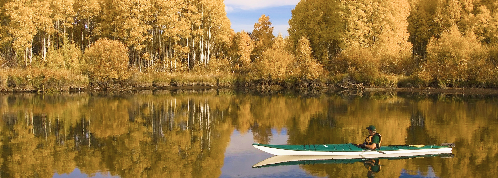
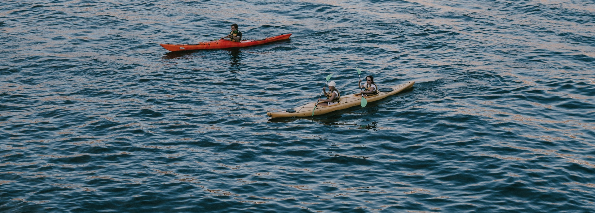
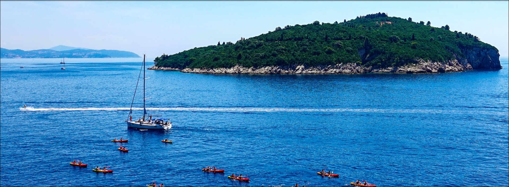

Su principal característica es el alto rendimiento en velocidad, combinando con su capacidad de carga nunca antes vista en un kayak de travesía, ya que puede navegar sin inconvenientes con un palista de 130kg mas 100kg de carga.

La pala es muy importante a la hora de remar o palear en kayak. Va a transmitir nuestra fuerza al agua, y nos va a desplazar hacia delante. También va a ser vital para toda maniobra navegando. La pala va a ser para nosotros como las zapatillas del corredor, la caña del pescador o la pilila de Nacho Vidal: nuestra herramienta.

Bolsillo frontal con red para rapido drenaje y solapa de seguridad para evitar perdida de objetos. Seis regulaciones laterales. Vivo reflectivo en bolsillo. Pasa cinto con enganche para Mosqueton / Handy / Navaja.